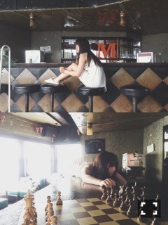

| 2016/03 23 Wed | がっこんちょ。704回目 |

パッションアンドピクチャー！
スッキリ！出演しました。
これからもスヌーズで起きます。
14thシングル
『ハルジオンが咲く頃』発売〜！
ユニット曲「遥かなるブータン」→全タイプ
個人PV「20」→Type-C
数字を数える間、
4日後の20年間を思い出します。
冷たい風と走って息があがる
心地よさを感じて、
あーなんて楽しいんだろう！
と思っていました。
毎度、贅沢な時間です。個人PV。
アニバーサリーもですが、
自分はまだまだ引き出しが少ない。
UTB見てねー
バーのママの一人娘。

19歳最後のグラビア撮影でありました。
このグラビア、ちゃんと
ストーリー仕立なんです。
一人娘、探偵の2役で、
新しいなーと思った！
外で撮ってる途中、設定も
いろいろ投げ出して
自由に動いたのを許してくれた
優しいスタッフのみなさんでした、、

らりん！
卒業おめでとうございます。
いつでも、真正面から
ぶつかってくれたのはらりんでした。
なかなか声に出せない私に
勇気を与えてくれてありがとう。
失敗した時にいじってくれて
空気を和ませてくれてありがとう。
卒業が決まってから
とても落ち着いたらりんでしたが、
楽屋で大きい声ではしゃいでる
あなたも好きです。よ！！！
らりんが笑ってないと不安になります。
いつもの笑顔を忘れないで。
後悔しても、しなくても
自分の道は自分で決める。
私にまだ足りない、覚悟
もっと好きなようにやってみるよ。
よし！がんばる！！
らりん！がんばれ！！
お互いがんばろーーー！

今週、広島に飛びます！
セミナーを受けるみなさん
よろしくお願いします〜〜！
乃木恋おもしろそうだな、
やってみようかな(^L^)きゅん
まりか
コメント(349)
2016/03/23 16:48